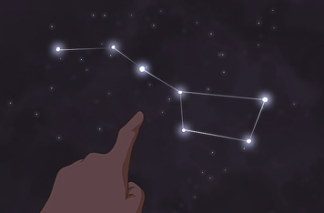

I can relate to this picture in many ways. It popped so many of my childhood memories.
When I was a child, my father used to take me upstairs at night, show me star constellations, make me point them out, teach me about stars, celestial bodies and astronomy. One nakshatra mandalam (Telugu: నక్షత్ర మండలం, Sanskrit: नक्षत्र मंडलम) used to always grab our attention as it got so much importance in Hindu mythology — Saptarshi Mandal (Telugu: సప్తర్షి మండలం, Sanskrit:सप्तर्षि मंडलम, English: Big Dipper).

There were several mythological events about this star asterism and personification of each and every marked stars in the above picture (except Casseiopeia, which has another story of my life). The star Polaris represents a great devotee Dhruva and the asterism represents the seven greatest seers — Gautama, Bharadvaja, Visvamitra, Jamadagni, Vasistha, Kashyapa, Atri and Bhrigu.
Dhruva, as a result of his bhakti on Vishnu, other traits and qualities he was considered eligible to be a star amongst others, the greatest attainable position for seers. Present day astronomers observed the asterism revolve constantly around the Polaris — which maps to the boon the Dhruva got by Vishnu that the seven seers would always accompany Dhruva.
Also, Dhruva means astronomical pole. And the Polaris word is related to Axial Pole and Because Polaris lies nearly in a direct line with the axis of the Earth’s rotation “above” the North Pole — the north celestial pole — Polaris stands almost motionless in the sky, and all the stars of the northern sky appear to rotate around it (reference: Wiki).
Hindu Marriage: In the Vedic and Puranic1 literature, Arundhati2 is regarded as the epitome of chastity, conjugal bliss and wifely devotion. In post-Puranic epic poems in Sanskrit and Hindi, she has been described as “chaste and revered” and with a character that is “unblemished, inspiring and worthy of imitation”. In Hindu marriages, the groom would point or show the bride the position of the “star” Arundhati, symbolizing how should be a bond between a husband and wife.
And, here is a science snippet about particular double star system — in traditional Indian astronomy, pair of Alcor and Mizar in constellation Ursa Major is known as Vashista and Arundhati. Alcor and Mizar are the binary stars or double stars system — consisting of two stars orbiting around their common barycenter. Doesn’t it signify something for a wife and husband? :)
All these things getting mapped to the Before-Christ times of Hindu science used to amaze me.
For a kid who is listening to his dad telling all this science, astronomy and celestial bodies, wouldn’t he become a hero for him? Even though he was a Telugu lecturer, he can speak volumes about astronomy, science of music, camera and optics, paintings and types of pens. He has a profound influence on me, my education and my ethics. Thank you dad! Such a great person, father, friend and human being you are.
May Lord Shiva bless you with great happiness and satisfaction.